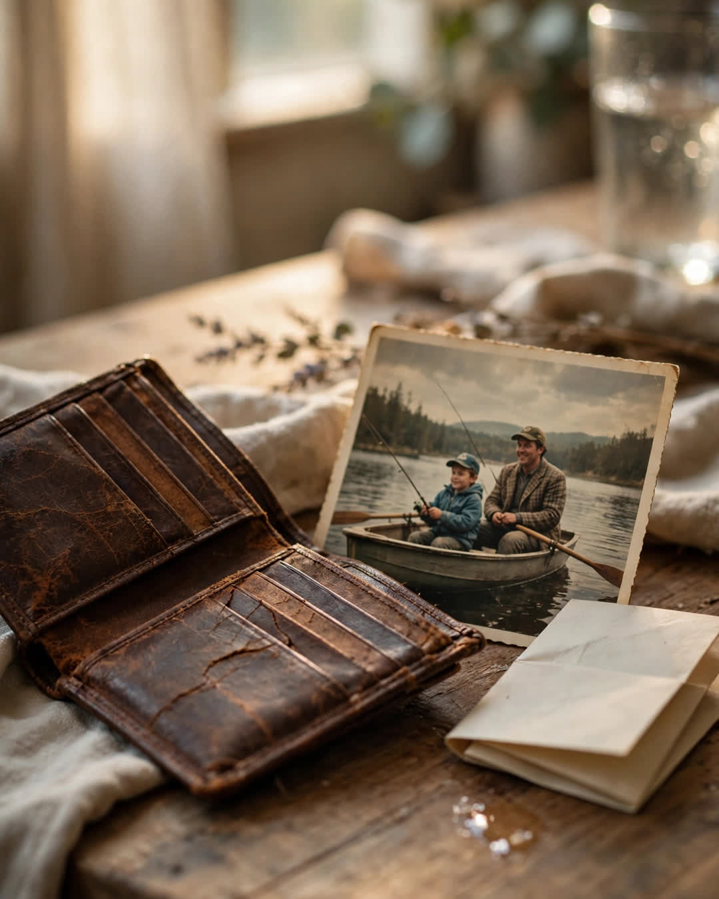

The Returned Wallet
A Clipp Kaili original story

The wallet I lost in 1998 came back in the mail in 2024, and every single dollar was still inside.
I was nineteen that spring, working summers at a hardware store in Tulsa, saving for a truck that would never be worth what I paid for it. The wallet held sixty-three dollars, a driver's license with a terrible haircut, a library card — and one photograph.
It was a photo of my dad and me at the lake, the summer before the diagnosis. He is laughing, holding up a fish too small to brag about, and I am twelve years old, all elbows and sunburn, leaning into his side like it was the safest address in the world. It was the only copy. When I lost the wallet at a gas station somewhere on Route 66, I didn't grieve the money for one second.
I grieved that photograph like a death.
For years I checked that gas station whenever I drove through. I asked. I left my number twice. Nothing. Life did what it does — I grew up, married, had kids, buried my dad in 2009 with a copy of a copy of another photo at the service, because the real one was gone.
Then, on an ordinary Tuesday last October, a padded envelope arrived with no return address. Inside was a brown leather wallet, cracked with age, the clasp rusted. Inside that: my license. My library card. Sixty-three dollars in old bills.
And the photograph. My dad. The fish. My sunburned twelve-year-old shoulder against his side.
Underneath it all was a note, folded twice, written in careful, shaky handwriting.
It said: "Young man — I found this wallet the week my life fell apart. I was twenty-four, out of work, out of chances, and so angry at the world I was ready to become the kind of man who keeps what isn't his. I opened this wallet intending to take the money. Then I saw your photo. A boy and his dad and a fish too small to keep, and both of you laughing like money had nothing to do with joy. I could not steal from that boy. I carried this wallet for twenty-six years, through rehab, through two jobs, through marrying and raising three kids of my own. Every time life got hard, I looked at that picture and remembered who I decided to be. Your photo kept me honest. It is time it came home. — R."
I sat at my kitchen table and cried over a stranger's handwriting until the ink went soft at the edges.
There was no name to thank. No address to drive to. Just twenty-six years of a man choosing, over and over, on the strength of one photograph he had no right to keep and every reason to return sooner. Maybe he was ashamed it took so long. Maybe it took that long for him to be able to let go of the thing that had held him together.
I framed the photo. It hangs in my hallway now, where my own kids pass it a dozen times a day. The wallet sits in a drawer beneath it — empty, except for a note I wrote and tucked inside, in case it ever needs to travel again.
It says: "For whoever finds this next — be the man in the photograph. Be the boy. Be the stranger who brings it home."
Some things you lose are just gone.
And some things spend twenty-six years making a stranger honest — then find their way back to teach you the same lesson.
This story is a work of fiction, written to touch hearts and bring families closer.
← Back to all stories